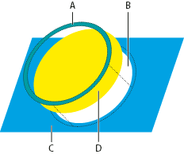

Create a trap
The Trap command creates traps for simple objects by identifying the lighter-colored artwork—whether it’s the object or the background—and overprinting (trapping) it into the darker artwork. You can apply the Trap command from the Pathfinder panel or as an effect. The advantage of using the Trap effect is that you can alter the trap settings at any time.

- A.
- Area of overprinting
- B.
- Area of knockout
- C.
- Background color
- D.
- Foreground color
In some cases, the top and bottom objects may have similar color densities so that one color is not obviously darker than the other. In this case, the Trap command determines the trap based on slight differences in color; if the trap specified by the Trap dialog box is not satisfactory, you can use the Reverse Trap option to switch the way in which the Trap command traps the two objects.
- If the document is in RGB mode, choose File > Document Color Mode > CMYK Color to convert it to CMYK Mode.
- Select two or more objects.
- Do one of the following:
-
To apply the command directly to the objects, choose Window > Pathfinder, and choose Trap from the panel menu.
-
To apply the command as an effect, choose Effect > Pathfinder >Trap. Select Preview if you want to preview the effect.
-
- Set trap options, and click OK.
 Trap options
Trap options
- Thickness
- Specifies a stroke width between 0.01 and 5000 points. Check with your print shop to determine what value to use.
- Height/Width
-
Specifies
the trap on horizontal lines as a percentage of the trap on vertical
lines. Specifying different horizontal and vertical trap values
lets you compensate for on‑press irregularities, such as paper stretch.
Contact your print shop for help in determining this value. The
default value of 100% results in the same trap width on horizontal
lines and on vertical lines. To increase the trap thickness on horizontal
lines without changing the vertical trap, set the Height/Width value
to greater than 100%. To decrease the trap thickness on horizontal
lines without changing the vertical trap, set the Height/Width value
to less than 100%.
Height/Width set to 50% (left) compared to 200% (right)
- Tint Reduction
-
Reduces
the tint of the lighter color being trapped; the darker color remains
at 100%. This option is useful when trapping two light-colored objects,
where the trap line may show through the darker of the two colors, resulting
in an unsightly dark border. For example, if you trap a
light yellow object into a light blue object, a bright green border
is visible where the trap is created. Check with your print shop
to find out what percentage of tint is most appropriate given the
type of press, inks, paper stock, and so on being used.
Tint reduction value of 100% (trap contains 100% of lighter color) compared to tint reduction value of 50% (trap contains 50% of lighter color)
- Traps With Process Color
- Converts spot-color traps to equivalent process colors. This option creates an object of the lighter of the spot colors and overprints it.
- Reverse Traps
- Traps darker colors into lighter colors. This option does not work with rich black—that is, black that contains additional CMY inks.
- Precision (as effect only)
- Affects how precisely an object's path is calculated. The more precise the calculation, the more accurate the drawing and the more time is required to generate the resulting path.
- Remove Redundant Points (as effect only)
- Removes unnecessary points.